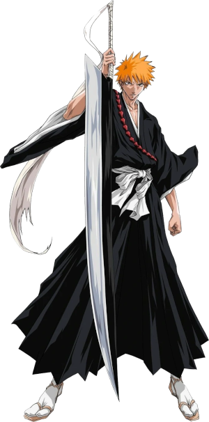
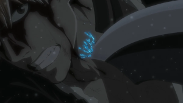
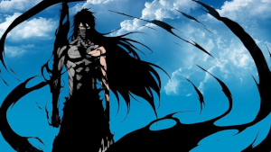
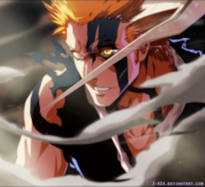

Ichigo Kurosaki
Quem é Ichigo Kurosaki ?
Ichigo Kurosaki é um adolescente de cabelos laranja e uma habilidade especial: ele pode ver fantasmas desde pequeno. Essa habilidade é algo que o diferencia de outras pessoas, mas ele leva uma vida relativamente normal com sua família em Karakura Town. Sua família inclui seu pai excêntrico, Isshin Kurosaki, e suas irmãs, Karin e Yuzu.
A vida de Ichigo muda completamente quando ele conhece Rukia Kuchiki, uma Shinigami (Deus da Morte) que aparece durante um ataque de um Hollow (espírito maligno). No confronto, Rukia fica gravemente ferida e, para proteger Ichigo e sua família, decide transferir seus poderes de Shinigami para ele. Só que algo inesperado acontece: Ichigo absorve praticamente todos os poderes dela, tornando-se um Shinigami substituto extremamente poderoso.
A partir desse momento, Ichigo assume a responsabilidade de proteger os vivos e purificar Hollows, enquanto tenta equilibrar sua vida normal de estudante com sua nova realidade espiritual. Porém, sua jornada não para por aí: ele descobre que sua ligação com o mundo espiritual é muito mais profunda do que parece, e isso o leva a enfrentar desafios gigantescos.
Poderes de Ichigo
1. Shinigami (Deus da Morte)
Quando Ichigo absorve os poderes de Rukia, ele desperta como um Shinigami substituto, empunhando uma espada chamada Zanpakutō, que reflete a alma e o poder de seu portador. Sua Zanpakutō se chama Zangetsu ("Lua Cortante"). Aqui estão as formas principais:
Shikai: A primeira liberação de sua espada. Zangetsu se transforma em uma espada enorme com um design simples e funcional. Nesse estado, Ichigo é extremamente forte e ágil.

Bankai Tensa Zangetsu: A segunda liberação de Zangetsu e um poder avançado. Sua espada se torna menor e mais elegante, mas sua velocidade e força aumentam de forma absurda. Ele também ganha uma espécie de capa negra, refletindo o poder de Zangetsu.
2. Poder Hollow
Ichigo tem uma conexão especial com os Hollows (espíritos malignos). Durante um treinamento intenso, ele desperta uma máscara de Hollow, que lhe concede força, velocidade e regeneração extraordinárias. Essa máscara simboliza o equilíbrio entre sua essência de Shinigami e de Hollow.
Mais tarde, ele atinge uma forma mais avançada chamada Hollowfication Completa, onde seu corpo se transforma parcialmente, aumentando ainda mais suas habilidades.
3. Poder Quincy
Um dos maiores mistérios de Ichigo é sua herança Quincy, que ele descobre graças à sua mãe, Masaki Kurosaki. Os Quincy são arqueiros espirituais que caçam Hollows. Essa revelação adiciona uma nova camada aos seus poderes, pois Zangetsu, que ele sempre pensou ser sua Zanpakutō, também está conectado à essência Quincy dentro dele.
4. Forma Final: Mugetsu
Em sua luta contra Aizen, Ichigo usa a técnica secreta de Zangetsu chamada Mugetsu ("Lua sem Luz"). Nessa forma, ele se torna praticamente uma entidade divina, com um poder avassalador que supera qualquer limite. No entanto, o uso dessa habilidade faz com que ele perca todos os seus poderes temporariamente.
5. Híbrido Completo
No arco final, Ichigo se torna uma fusão perfeita de todas as suas essências: Humano, Shinigami, Hollow e Quincy. Isso o torna único, com habilidades e poderes que transcendem as limitações de qualquer raça.
Relações de Ichigo
Familía
| Parente | Relação |
|---|---|
| Isshin Kurosaki | Pai. Ex-Shinigami e extremamente protetor, embora seja excêntrico e brincalhão. |
| Masaki Kurosaki | Mãe (falecida). Era uma Quincy e uma figura amorosa que morreu protegendo Ichigo |
| Karin Kurosaki | Irmã mais nova. Cética, mas espiritualmente sensível e muito madura para a idade. |
| Yuzu Kurosaki | Irmã mais nova. Gentil, dedicada às tarefas domésticas e carinhosa com Ichigo. |
Amigos
| Amigo | Relação |
|---|---|
| Rukia Kuchiki | Amiga próxima e a responsável por transformar Ichigo em Shinigami. Relação de amizade profunda e respeito mútuo. |
| Orihime Inoue | Melhor amiga e interesse amoroso. Gentil e com poderes curativos únicos. Ama profundamente Ichigo. |
| Uryū Ishida | Rival e amigo. Quincy orgulhoso que ajuda Ichigo em várias batalhas. |
| Yasutora "Chad" Sado | Melhor amigo. Um humano com poderes de força bruta e lealdade inabalável. |
| Renji Abarai | Amigo e rival. Shinigami que inicialmente lutou contra Ichigo, mas acabou se tornando um aliado próximo. |
| Kisuke Urahara | Mentor e aliado. Um ex-Shinigami que ajuda Ichigo a treinar e entender seus poderes. |
Inimigos e Batalhas Épicas
| Inimigo | Descrição | Batalha Épica |
|---|---|---|
| Grand Fisher | Hollow que matou a mãe de Ichigo. | Ichigo enfrenta Grand Fisher para vingar sua mãe, mas a luta revela que ele ainda não está pronto para certos desafios. |
| Renji Abarai | Tenente do Gotei 13 que inicialmente tenta capturar Rukia | No resgate de Rukia, Ichigo derrota Renji, mostrando o quanto ele cresceu como Shinigami |
| Byakuya Kuchiki | Irmão de Rukia, um capitão extremamente habilidoso e orgulhoso | A luta épica contra Byakuya no arco da Soul Society é um dos momentos mais icônicos, onde Ichigo revela sua Bankai. |
| Sōsuke Aizen | O grande vilão manipulador do início da série, líder dos arrancars. | No confronto final, Ichigo usa a técnica Mugetsu, sacrificando temporariamente seus poderes para derrotar Aizen. |
| Grimmjow Jaegerjaquez | Espada Nº 6, feroz e orgulhoso, com uma rivalidade pessoal contra Ichigo | As batalhas contra Grimmjow são intensas, especialmente a final, onde Ichigo usa sua máscara Hollow para vencê-lo. |
| Ulquiorra Cifer | Espada Nº 4, frio e poderoso | A luta culmina com Ichigo se transformando em um Hollow completo, derrotando Ulquiorra de forma brutal. |
| Yhwach | Líder dos Quincy e o inimigo mais poderoso de toda a série | Ichigo enfrenta Yhwach no arco final, combinando todas as suas forças e heranças para derrotar o vilão quase invencível. |
| Zaraki Kenpachi | Capitão sedento por batalhas, adora lutar contra adversários fortes. | A luta contra Zaraki na Soul Society é brutal, mostrando o quanto Ichigo evolui sob pressão. |